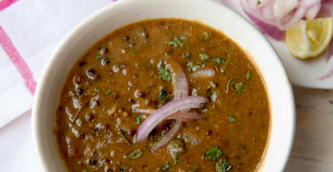

Dal Makhani
Whole black lentils simmered until tender, tempered with onions, ginger, garlic, and tomatoes.
Whole black lentils simmered until tender, tempered with onions, ginger, garlic, and tomatoes.
Yellow lentils seasoned with cumin, tomatoes, cooked with green chillies.
Fresh, homemade cottage cheese cooked in a delicately spiced gravy made from fresh spinach - a classic Indian dish.
Minced vegetables sandwiched between slices of cottage cheese, cooked in a thick gravy and topped with fresh cream.
Nine different vegetables and fruits cooked in a cashew nut gravy, garnished with dried fruit and nuts.
Diced carrot and potato, green peas, beans, and capsicum, tossed in butter and cooked in a tomato and cashew nut gravy.
Nutritious chickpeas cooked to a northern Indian recipe using an exotic blend of spices.
Tandoor-roasted marinated eggplant mashed and blended with a special spice mixture.
Diced potato and cauliflower, flavored with spices.
If you'd like a change from the usual type of curry, try this: an assortment of vegetables, cooked in curry with extra flavor from spicy tangy pickles.